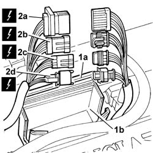
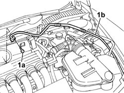
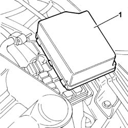
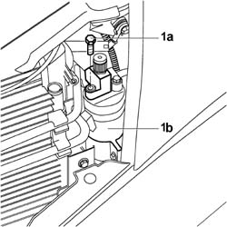
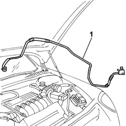

5040A54 Pipe from drier filter to expansion valve - R.R.
- Path
- Procedures > 50 auxiliary units > 5040 AIR CONDITIONING CASING AND COMPONENTS > 5040A AIR CONDITIONING COOLING CIRCUIT > 5040A54 Pipe from drier filter to expansion valve - R.R.
- Kind
- repair procedure (removal / refitting; the operation number is the code)
- Applies to
- all engines; all production periods
- Interactive page
- https://sloeber94.github.io/elrnDB-lThss/en/#/157275
Applies to: all engines; all production periods
 Removing
Removing
 Refitting
RefittingSee in Op. 7040D50 ENGINE COMPARTMENT UPPER SOUND INSULATION SHIELD - R.R.
See in Op. 5040A10 Air conditioning coolant circuit - Drying and Repressurizing
- Open the boot and disconnect the negative battery terminal.
Applies to: engines: 2.4 20V; all production periods
Applies to: engines: 2.0 TB, 2.4 20V; all production periods
See in Op. 1016A40 Ignition COIL COVER on cylinder head - R.R.
Applies to: engines: 3.0 V6, 3.2 V6; all production periods
See in Op. 1056B82 Injection/ignition system CONTROL UNIT (one) - R.R.
1. Open the cover (1a) for the connector protective casing (1b).
2. Disconnect the connectors (2a), (2b), (2c), (2d) and place the electrical wiring away from the work area.
 | Description | Connector |
|---|---|---|
2a | Front/engine coupling | D004 |
| Description | Connector |
|---|---|---|
2b | Lambda sensor on catalyzer | K017 |
| Description | Connector |
|---|---|---|
2d | Detonation sensor - 2 | K050 |
| Description | Connector |
|---|---|---|
2c | Lambda sensor on catalyzer 2 | K018 |

Applies to: all engines; all production periods
- Move the heater pipes aside.
1. Undo the bolt (1a) fixing the pipe from the drier filter to the expansion valve (1b), expansion valve side.
- Disconnect the pipe from the expansion valve.

Applies to: all engines; all production periods
- Release the pipe from the retaining springs.
Applies to: engines: 2.4 20V, 3.0 V6; all production periods
Applies to: engines: 2.0 TB; all production periods
Applies to: all engines; all production periods
See in Op. 1048A21 AIR INLET HOSE FROM INTAKE TO FILTER - R.R.
See in Op. 1048A10 COMPLETE AIR FILTER -R.R.
1. Remove the fuse box cover.

Applies to: all engines; all production periods
1. Undo the bolt (1a) fixing the pipe from the drier filter to the expansion valve, drier filter (1b) side.

Applies to: all engines; all production periods
1. Remove the pipe.

Applies to: all engines; all production periods
Refitting
Removing- Fit the end of the pipe from the filter to the expansion valve on the filter, tightening the fixing bolt.
See in Op. 5040B20 LINEAR PRESSURE TRANSDUCER FOR AIR CONDITIONING SYSTEM - R.R.
- Secure the pipe to the retaining springs.
- Fasten the expansion valve end of the pipe.
Applies to: engines: 3.0 V6, 3.2 V6; all production periods
- Connect the electrical connectors for the front/engine coupling, the Lambda sensors and the detonation sensor.
| Description | Connector |
|---|---|---|
. | Front/engine coupling | D004 |
| Description | Connector |
|---|---|---|
. | Lambda sensor on catalyzer | K017 |
| Description | Connector |
|---|---|---|
. | Detonation sensor - 2 | K050 |
- Reposition the connectors in the protective casing.
- Close the protective casing.
- Repositin the heater pipes.
See in Op. 1056B82 Injection/ignition system CONTROL UNIT (one) - R.R.
Applies to: all engines; all production periods
See in Op. 1048A10 COMPLETE AIR FILTER -R.R.
See in Op. 1048A21 AIR INLET HOSE FROM INTAKE TO FILTER - R.R.
Applies to: engines: 2.4 20V, 3.0 V6; all production periods
Applies to: engines: 2.0 TB; all production periods
Applies to: engines: 2.4 JTD 10V; all production periods
Applies to: engines: 2.0 TB, 2.4 20V; all production periods
See in Op. 1016A40 Ignition COIL COVER on cylinder head - R.R.
Applies to: all engines; all production periods
- Reposition the fuse box cover.
- Connect the negative battery terminal.
See in Op. 5040A10 Air conditioning coolant circuit - Drying and Repressurizing
See in Op. 7040D50 ENGINE COMPARTMENT UPPER SOUND INSULATION SHIELD - R.R.
Topics linked from this page (9)
- 1016A10 SOUND-PROOFING COVER - R.R.
- 1016A40 Ignition COIL COVER on cylinder head - R.R.
- 1048A10 COMPLETE AIR FILTER -R.R.
- 1048A21 AIR INLET HOSE FROM INTAKE TO FILTER - R.R.
- 1048A28 vacuum air circuit resonator pipe - r+r
- 1056B82 Injection/ignition system CONTROL UNIT (one) - R.R.
- 5040A10 Air conditioning coolant circuit - Drying and Repressurizing
- 5040B20 LINEAR PRESSURE TRANSDUCER FOR AIR CONDITIONING SYSTEM - R.R.
- 7040D50 ENGINE COMPARTMENT UPPER SOUND INSULATION SHIELD - R.R.